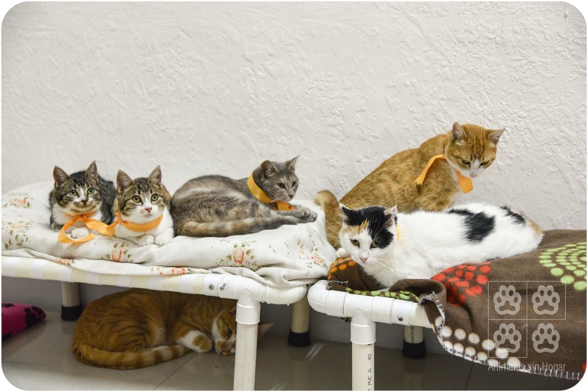
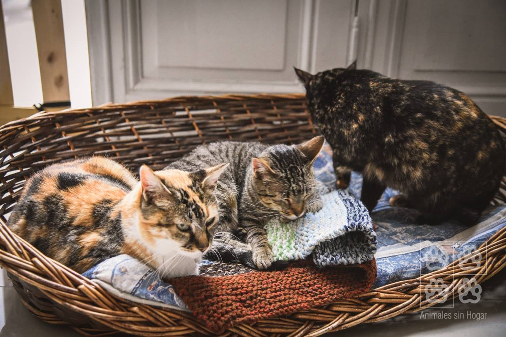
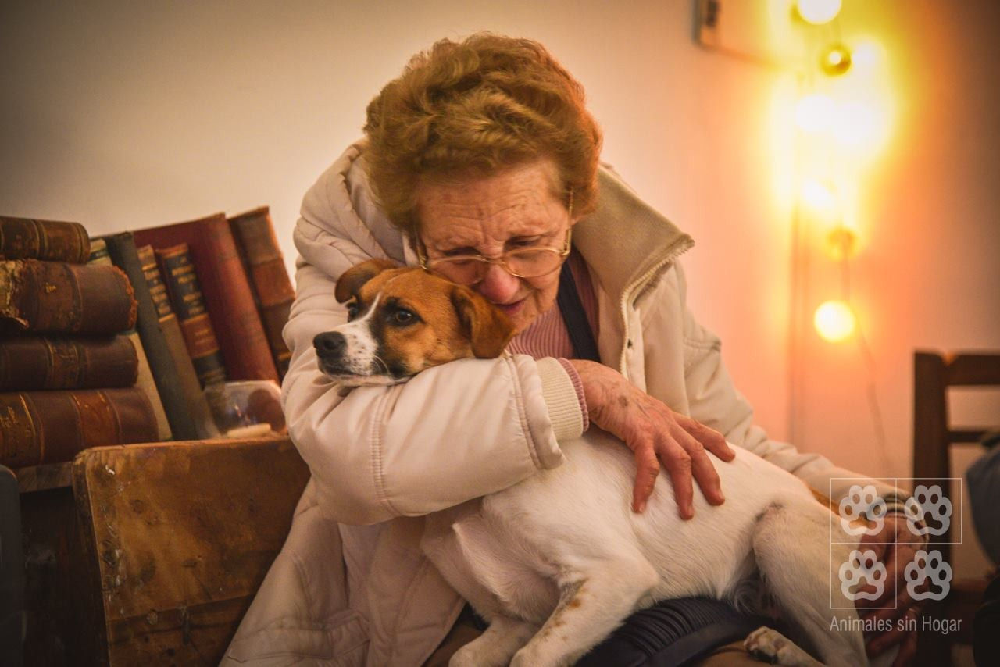
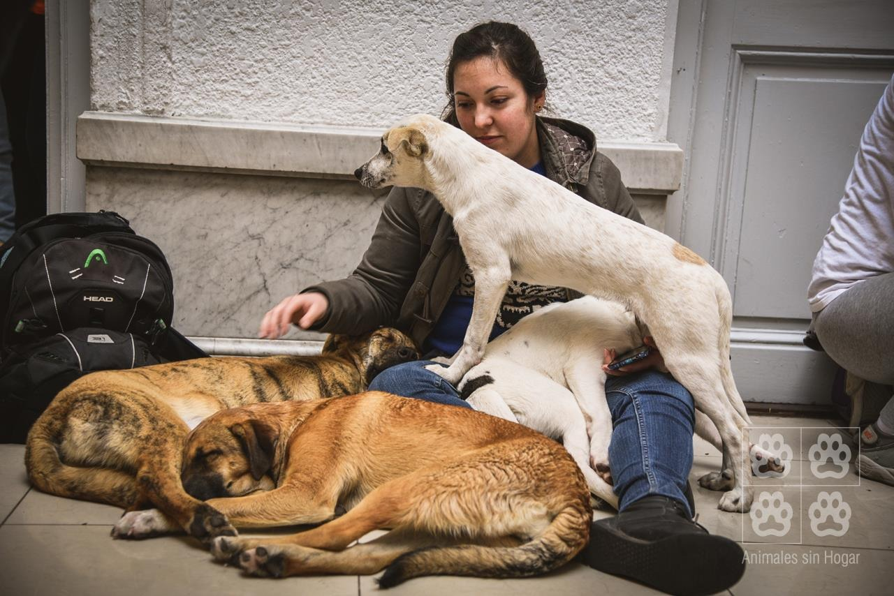
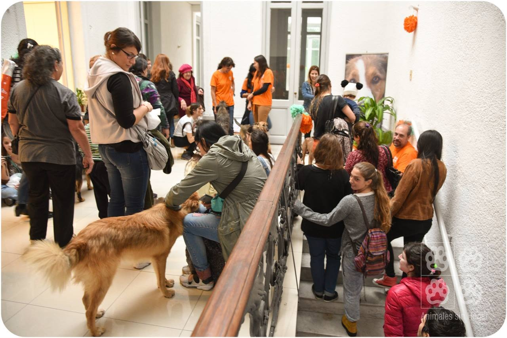

Refugios Uruguay

Espacio ASH
Animales Sin Hogar es una asociación civil uruguaya sin fines de lucro fundada el 16 de noviembre de 2003.

Está compuesta por voluntarios
que fomentan la adopción y tenencia responsable de animales de compañía y el bienestar de los animales en general.

Chacra ASH
Amparando 2000 animales, esta organización cuenta con una chacra.

Es importante colaborar
Mes a mes se necesitan 12.000 kilos de alimento para perros y gatos.

Para adoptar debes de visitar su centro de adopciones
Allí encontraras perros y gatos en adopción, podes elegir entre ellos el que mejor se ajuste a tu ritmo de vida.